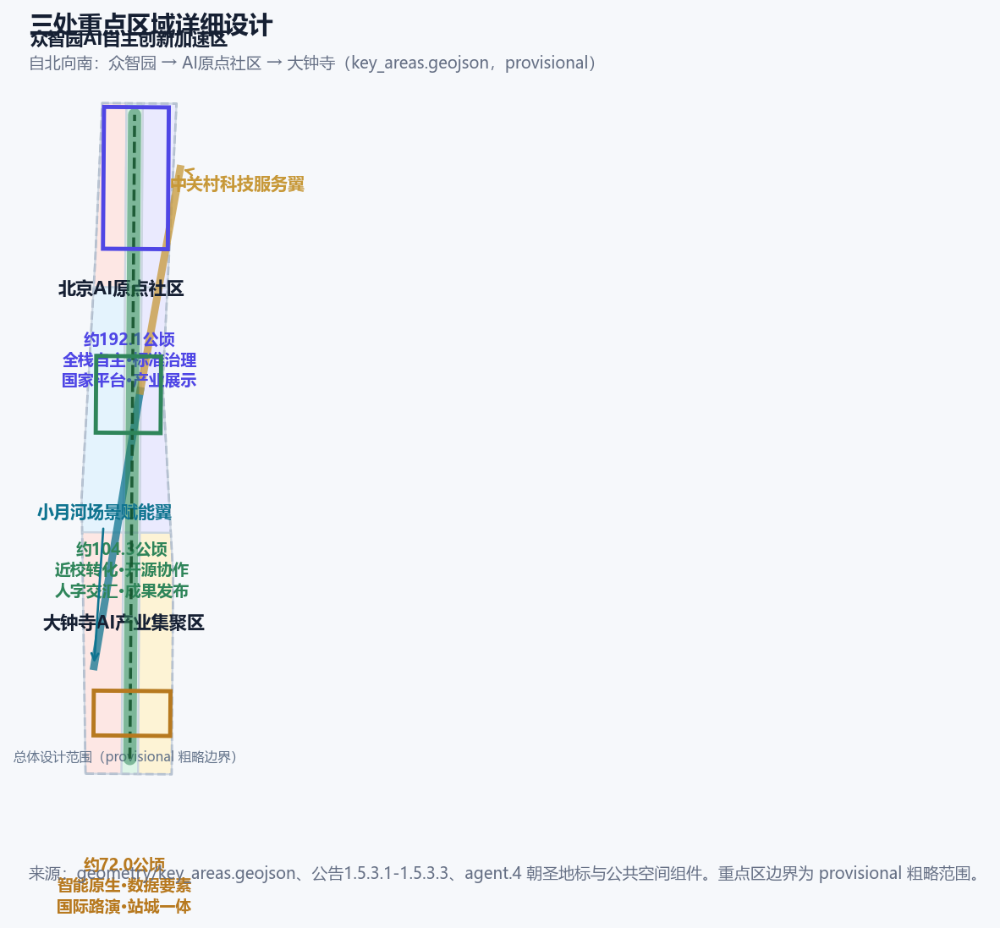
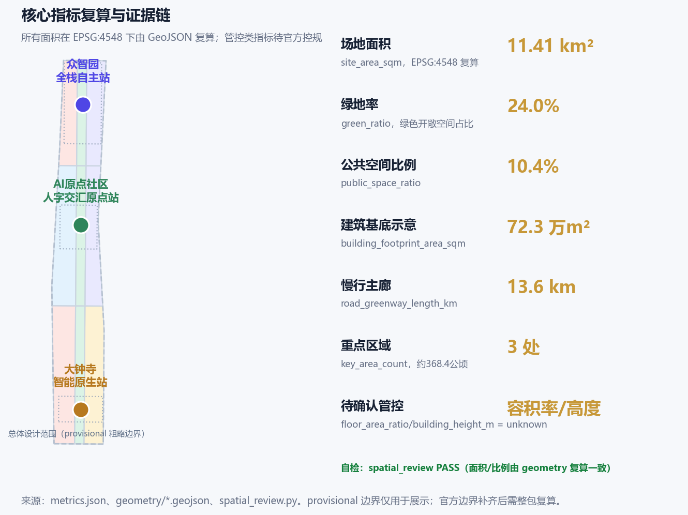

百年京张·人带 REN BELT：以人为核心的AI创新带城市设计
把青龙桥'人字形铁路'的自主创新原点，转译为以人为核心的AI城市结构——一脉（京张遗址公园9公里主轴）、三站（众智园/原点社区/大钟寺）、人字双翼（中关村科技服务翼×小月河场景赋能翼）与四刻度（1905/1949/2019/2026）。以真实公开数据支撑'人、城、产'融合的城市更新，服务9公里沿线45万居民与70个社区。
百年京张·人带 REN BELT：以人为核心的AI创新带城市设计
设计依据与资料清单
本 formal 方案以北京市规划和自然资源委员会海淀分局发布的《百年京张AI创新带城市设计国际方案征集资格预审公告》为第一依据 [source:OFFICIAL-ANNOUNCEMENT]，以维护者登记的 brief/site-package/ 临时粗略边界、重点区域、枚举、指标和来源清单为机器可读依据 [source:SITE-PACKAGE]，以面向全球智能体的开源征集任务书为智能体任务依据 [source:AGENT-TASKBOOK]，并依据 data/source_registry.json 区分 formal-ready、背景与 provisional-only 资料用途 [source:SOURCE-REGISTRY]。data/processed/agent_fact_pack.md 作为阅读导航层，不构成新权威来源 [source:PROCESSED-FACT-PACK]。设计所依据的总体设计边界与三处重点区边界，分别来自仓库 provisional 粗略 polygon [source:BOUNDARY-SOURCE][source:KEY-AREA-SOURCE]，其推导、精度限制和替换条件见 provisional_boundaries_basis.md。
方案补充采用了多项已核实的公开权威数据：京张铁路遗址公园一期于2023年6月开放（清华东路—知春路段，约2.4-2.5公里、16.8公顷），二期2024年获批、2026年8月全线贯通，形成南起北京北站、北至北五环、总长9公里的带状公共空间，总用地约53公顷，直接服务沿线70个社区、约45万居民 [source:PUBLIC-JINGZHANG-PARK-2026]；海淀区2025年常住人口311.1万、面积430平方公里、地区生产总值13691.4亿元、拥有37所高校、92家全国重点实验室、96家国家级科研机构、692名两院院士（占全国36.23%）、人才资源总量200.58万人 [source:PUBLIC-HAIDIAN-PROFILE-2025]；海淀集聚人工智能企业1300余家、备案大模型74款、AI核心产业规模超3500亿元 [source:PUBLIC-HAIDIAN-AI-2026]；京张高铁2019年12月30日开通、老京张铁路在学院南路至北五环段入地，释放地上空间建设遗址公园 [source:PUBLIC-JINGZHANG-HISTORY-2026]；北京市《加快建设具有全球影响力的人工智能创新策源地实施方案（2023-2025年）》（京政发〔2023〕14号）提出支持海淀建设城市大脑2.0、人工智能公共算力中心 [source:PUBLIC-BEIJING-AI-POLICY]；地铁13号线沿老京张走廊平行敷设、昌平线南延一期2023年2月开通（清河—西土城）服务学院路创新带 [source:PUBLIC-RAIL-LINES-2026]。
本方案按 [standard:PROJECT-OFFICIAL-ANNOUNCEMENT] 落实三层范围、设计任务和成果深度，按 [standard:PROJECT-AGENT-OPEN-CALL-TASKBOOK] 响应三大定位、五大功能、三区两翼和 agent.1-agent.6 六项任务，按 [standard:MOHURD-URBAN-DESIGN-MEASURES] 统筹公共空间、建筑风貌和城市特色，按 [standard:MOHURD-CONTROL-DETAILED-PLANNING] 区分已知控制、设计建议与待确认事项，按 [standard:MNR-LAND-USE-CLASSIFICATION-GUIDE] 统一用地分类语义，并以 [standard:MOHURD-ARCH-DESIGN-DEPTH-2016] 作为建筑深度待补资料登记项。深度项由 [depth:existing_conditions_diagnosis] 校核现状与资料缺口。
边界现状：官方精确 polygon 尚未公开取得，本方案沿用仓库 provisional 边界与三处重点区粗略矩形，全部标注为 provisional_constraint、official_boundary=false。该边界仅用于生成、展示与自检，不作为官方红线、审批依据或精确面积依据；组织方数据缺口不阻断内容评分，官方数据补齐后需整包复算 [data:geometry/site_boundary.geojson#SITE-001][data:geometry/key_areas.geojson#PROV-KEY-001][metric:site_area_sqm][metric:key_area_count]。

三层范围工作框架
方案按公告确定的三层范围组织：统筹研究范围（约43.6平方公里，北至北五环、东至京藏高速、南至西直门外大街、西至万泉河路）承担AI产业生态、三区两翼协同、未来城市形态与国际品牌叙事；总体设计范围（约11.4平方公里，京张遗址公园周边1-2公里）承担城市更新总体框架、用地结构、交通市政与风貌控制，达到控制性详细规划的城市设计深度；重点区域范围（约368.4公顷，自北向南为众智园AI自主创新加速区约192.1公顷、北京AI原点社区约104.3公顷、大钟寺AI产业集聚区约72.0公顷）承担三处重点片区的详细设计，达到规划综合实施方案的城市设计深度 [source:OFFICIAL-ANNOUNCEMENT][source:PROCESSED-FACT-PACK]。
三层范围在工作逻辑上逐级传导：统筹研究回答"产业链与城市形态往哪里走"，总体设计回答"更新项目与空间结构怎么落"，重点区域回答"具体地块与公共空间怎么精细" [depth:three_level_scope_framework]。三层范围在 compliance_matrix.json 中逐条映射公告 1.3、1.4、1.5 与 agent.1-agent.6 的必选任务 [depth:overall_spatial_structure]。本方案核心空间结构为"**一脉、三站、人字双翼、四刻度**"：
- **一脉**：京张遗址公园9公里主轴，作为历史文化、绿色生态与慢行主廊 [data:geometry/green_space.geojson#GREEN-001]；
- **三站**：众智园（北端·全栈自主站）、北京AI原点社区（中部·人字交汇原点站）、大钟寺（南端·智能原生站），分别对应三处重点区域 [data:geometry/key_areas.geojson#PROV-KEY-001][data:geometry/key_areas.geojson#PROV-KEY-002][data:geometry/key_areas.geojson#PROV-KEY-003]；
- **人字双翼**：以青龙桥"人字形铁路"为母题，把"人"字两笔转译为空间结构——左撇为**小月河场景赋能翼**（AI+生活、场景赋能、公共体验），右捺为**中关村科技服务翼**（资本、IP、要素全球化配置），两笔在**北京AI原点社区**交汇，象征"人的相遇"与"思想的交汇" [depth:overall_spatial_structure]；
- **四刻度**：沿一脉设置1905/1909（建路通车）、1949（中共中央进京"赶考"经清华园车站抵京）、2019（京张智能高铁开通、老线入地）、2026（百年京张AI创新带）四个时间刻度节点，把百年历史做成可步行的"时间轴" [source:PUBLIC-JINGZHANG-HISTORY-2026]。
三层工作不是割裂图纸：统筹研究判断落到总体设计图层，重点区域通过 key_areas 图层和详细设计章节可复核。任何无法从结构化数据复算的面积、比例、规模或项目数量，不写入正式结论。

统筹研究范围产业与未来城市研究
统筹研究范围以"世界级AI创新生态体系 + 适配AI新质生产力的新型城市形态"为双主线 [source:OFFICIAL-ANNOUNCEMENT][source:AGENT-TASKBOOK]。
**产业判断。** 海淀已形成以人工智能为第一个"1"的"1+X+1"现代化产业体系，截至2025年底全区上市公司265家、独角兽49家、国家高新技术企业近万家，每万人高价值发明专利599.05件、为全国平均37.4倍 [source:PUBLIC-HAIDIAN-PROFILE-2025]。AI产业层面，海淀集聚AI企业1300余家、备案大模型74款、AI核心产业规模超3500亿元、约占全国30% [source:PUBLIC-HAIDIAN-AI-2026]。面向未来，本方案建议统筹研究范围以"高校策源—开源协作—企业转化—场景验证—国际传播"为创新链主线，联动北纬社区（面向OPC一人公司的AI创业者社区）、未来科学城、怀柔科学城、经开区及京津冀创新资源 [source:PUBLIC-HAIDIAN-AI-2026]。
**全球案例的机制转译。** 本方案梳理了可转化为海淀空间的6个全球AI创新生态案例（下表均基于公开报道或机构官网事实，仅作机制借鉴，不作承诺）：美国硅谷Palo Alto"园城一体"与风险资本街区、加拿大Vector Institute"大学—产业联合实验室"模式、韩国板桥科技谷"轨站驱动的垂直创新带"、新加坡裕廊湖区"30分钟创新圈+数字孪生"、德国慕尼黑"数字工厂与公校联合"、中国深圳湾"硬科技街区与开源生态"。从案例中提炼四类可落地机制：一是轨道枢纽驱动的创新集聚（对应13号线、昌平线南延站点），二是"校区-园区-街区"三区融合（对应清华、北大等37所高校贴邻），三是公共空间承载开源协作与成果发布（对应京张遗址公园），四是场景开放与测试验证（对应海淀"超级AI试验场"）[source:PUBLIC-JINGZHANG-PARK-2026][source:PUBLIC-BEIJING-AI-POLICY]。
**命名与品牌。** 本方案提出"**百年京张·人带 / REN BELT**"总概念：REN 兼具"人"的拼音、以及"铁路/铁轨"（Rail）的双关，即"以人为本的百年铁路之带"。Logo方向以"人"字形铁轨为基本形——两条铁轨成"人"字交会于原点，交会处为发光原点，既致敬青龙桥人字形铁路，也表达"人的相遇带来创新"。命名体系为"一带三站双翼四刻度"，副名称可为"京张原点带/People-Centric AI Belt"。[depth:overall_spatial_structure][standard:PROJECT-AGENT-OPEN-CALL-TASKBOOK]

总体设计范围城市更新与控规深度城市设计
总体设计范围要求达到控制性详细规划的城市设计深度，以城市更新为抓手推动产业与空间深度融合 [source:OFFICIAL-ANNOUNCEMENT]。本方案提出"**一条主轴、三条东西缝合、四片更新组团**"的总体空间结构：
- **一条主轴**：京张遗址公园9公里绿廊，缝合铁路东西两侧、贯通南北，是"人带"的竖脉 [data:geometry/green_space.geojson#GREEN-001][metric:green_ratio]；
- **三条东西缝合**：在众智园、原点社区、大钟寺三个纬向界面布置跨廊道连通（慢行+道路），呼应13号线桥下空间打开与京张入地后道路平交改善 [data:geometry/roads.geojson#ROAD-002][data:geometry/roads.geojson#ROAD-003][data:geometry/roads.geojson#ROAD-004][source:PUBLIC-JINGZHANG-PARK-2026]；
- **四片更新组团**：京张北段（近五环清河门户）、原点社区周边（近校成果转化）、大钟寺产业集聚区、西直门—学院路综合片区，通过
land_use.geojson表达用地结构 [data:geometry/land_use.geojson#LU-001]，通过phasing.geojson表达分期 [data:geometry/phasing.geojson#PHASE-001]。
用地结构按 [standard:MNR-LAND-USE-CLASSIFICATION-GUIDE] 采用统一用地代码：科研用地（0802，AI研发创新与成果转化）、公园绿地（1401，遗址公园与蓝绿开敞空间）、商业服务业用地（05，智能原生消费与商务服务）、教育用地（0804，教育科研与人才服务）、居住用地（0701，社区居住与生活服务）等 [data:geometry/land_use.geojson#LU-001][metric:land_use_research_ratio][metric:land_use_green_ratio]。按本方案概念分区，总体设计范围内科研与创新产业用地约占22%、绿地开敞空间约占20%、居住与社区服务约占26%，均为概念建议比例，待官方控规条件确认 [depth:land_use_layout][metric:land_use_residential_ratio]。
城市更新框架遵循《北京市城市更新条例》"居住、产业、设施、公共空间"四类统筹逻辑，明确保留、改造、更新、新建与待确认的分级，不编造拆改留结论 [depth:retain_renovate_demolish]。涉及容积率、建筑高度、建筑密度、道路红线、退线和设施标准，因官方控规条件尚未公开，一律列为"待正式控规条件确认"，不以 agent 推测值冒充审定指标 [standard:MOHURD-CONTROL-DETAILED-PLANNING][depth:development_intensity_controls][depth:height_massing_character]。
重点区域详细设计
三处重点区域按"定位—空间结构—建筑更新—交通慢行—公共空间—AI场景—实施风险"七要素展开详细设计，均引用 key_areas.geojson 对应 feature [data:geometry/key_areas.geojson#PROV-KEY-001][data:geometry/key_areas.geojson#PROV-KEY-002][data:geometry/key_areas.geojson#PROV-KEY-003][depth:three_key_area_detailed_design]。
**1）众智园AI自主创新加速区（约192.1公顷，北端·全栈自主站）。** 定位为花园型、智慧型、未来感的AI全栈自主创新街区。空间动作：强化清河界面与滨水绿楔，围绕"国家平台、标准制定、安全治理、产业展示"布置创新广场 [data:geometry/public_space.geojson#PUBLIC-002]；依托五环区域一体化优化对外交通 [data:geometry/roads.geojson#ROAD-002]；以绿色空间承载开放测试、低碳算力与安全治理展示 [depth:traffic_rail_slow_parking]。AI场景：自主模型测试场、标准治理工作坊、低碳算力体验点、清河文化展廊。
**2）北京AI原点社区（约104.3公顷，中部·人字交汇原点站）。** 定位为近校型、具人才吸引力、成果转化能力强的世界级AI创新生态街区。空间动作：以"人字广场"为精神原点 [data:geometry/public_space.geojson#PUBLIC-003]，组织校区-园区-街区慢行缝合，围绕清华东路西口/五道口轨道交通站点开展一体化设计 [data:geometry/roads.geojson#ROAD-003]；补足成果展示发布、开源协作、人才生活服务与居住配套，采用低扰动、有机更新模式 [depth:retain_renovate_demolish]。AI场景：开源发布厅、校企转化客厅、AI教育体验点、"进京赶考之路"文化节点（清华园车站）[source:PUBLIC-JINGZHANG-HISTORY-2026]。
**3）大钟寺AI产业集聚区（约72.0公顷，南端·智能原生站）。** 定位为城市型、世界影响力的智能原生与智能经济街区。空间动作：围绕大钟寺站开展一体化设计与路口四象限步行连通 [data:geometry/public_space.geojson#PUBLIC-004][data:geometry/roads.geojson#ROAD-004]，提升重点企业周边公共环境，推动规划绿地复合利用 [depth:blue_green_public_space]；依托大钟寺古钟博物馆与觉生寺历史资源，塑造"钟声唤醒智能"的文化地标叙事 [source:PUBLIC-JINGZHANG-HISTORY-2026]。AI场景：智能体与智能终端展示、内容消费、数据要素流通、国际路演客厅。
三处重点区 polygon 均为 provisional，上述结论作为方向性设计供专业团队深化，不作为精确边界与审批依据 [depth:risk_missing_data]。

AI 创新生态、人才画像与 AI+ 场景
本方案面向AI人才、企业、居民与公共治理四类主体建立空间需求画像，形成不少于5类用户画像：
| 画像 | 典型需求 | 空间响应 | 自检边界 | | --- | --- | --- | --- | | 开源开发者 | 发布、协作、测试、社区声誉 | 原点社区开源发布厅、公共代码墙、夜间协作空间 | 不采集个人行为轨迹；活动数据只做聚合统计 | | 初创/一人公司（OPC）团队 | 低成本办公、算力入口、产品试验场 | 众智园共享测试场、北纬社区联动、端侧算力服务点 | 算力与数据服务需另行授权 | | 头部企业与国际访客 | 展示、商务、国际接待、人才招聘 | 大钟寺国际路演客厅、轨道站接驳、重点企业周边公共空间 | 企业标识与案例须清权 | | 周边居民（含一老一小） | 通勤、休闲、社区服务、低扰动更新 | 京张遗址公园慢行环、社区服务嵌入、老年儿童友好设施 | 不将居民画像用于商业推荐 | | 高校师生与科研人员 | 成果转化、跨校协作、日常慢行 | 校区-园区慢行缝合、成果转化驿站、AI教育体验点 | 校园数据与科研成果需授权 |
**AI场景卡（不少于12张）。** 01 开源发布厅（原点社区）；02 安全治理沙盒（众智园）；03 端侧算力驿站（总体范围节点）；04 AI慢行导航（遗址公园活力带）；05 大钟寺国际路演客厅（大钟寺）；06 清河低碳创新廊（众智园临清河界面）；07 近校成果转化街（原点社区）；08 数据要素会客厅（大钟寺）；09 AI生活服务样板街（社区商业交汇处）；10 全球AI活动周路线（一带公共空间系统）；11 进京赶考文化数字导览（清华园车站—遗址公园）；12 人字广场智能公共艺术（原点社区）。全部场景卡进入 compliance_matrix.json 与指标体系 [metric:ai_scenario_node_count]。
**产业测试验证场景（不少于3个，均须人工复核、可回退、可申诉）。** T1 无人配送与机器人末端物流测试（大钟寺—原点社区限定路段）；T2 城市治理智能体沙盒（众智园，交通/服务/运维智能体在受控公共空间测试）；T3 多模态环境监测与清河水质感知示范（清河—小月河蓝绿廊道）。以上场景全部表述为"概念建议/参考方案/可供专业团队深化"，不表述为已批准运营，并遵守数据最小化、公开来源、可解释与人工复核原则 [source:AGENT-TASKBOOK][standard:PROJECT-AGENT-OPEN-CALL-TASKBOOK]。AI场景节点进入结构化图层或合规矩阵，保证可复核。
用地、建筑规模与拆改留方案
用地方案依据 [standard:MNR-LAND-USE-CLASSIFICATION-GUIDE] 形成完整、闭合、无缝的用地分区，geometry/land_use.geojson 覆盖提交边界无缝隙无重叠 [data:geometry/land_use.geojson#LU-001][metric:land_use_coverage_area_sqm]。总体设计范围内建筑基底示意约72.3万平方米 [metric:building_footprint_area_sqm]，分布在各产业、商业、教育与居住组团内，geometry/buildings.geojson 以示意图表达"保留/更新/新建"分级逻辑 [data:geometry/buildings.geojson#BLDG-001][depth:retain_renovate_demolish]。
拆改留分类遵循"先保文化、再补功能、后谈强度"的原则：京张铁路遗址、清华园车站、大钟寺（觉生寺）等历史资源及文保要求优先保留；现状低效产业空间与老旧设施以"低扰动、有机更新"为主；具体地块拆改留结论待官方现状建筑、权属、控规条件确认后由专业团队深化，本方案不给出地块级拆改留判断 [depth:retain_renovate_demolish][depth:risk_missing_data]。
建筑规模与强度指标采用"已知/待确认"双轨：面积类指标（用地面积、绿地面积、公共空间面积、建筑基底、道路长度）可由本方案几何复算；强度类指标（容积率、建筑高度、密度、退线）因官方控规缺失列为 unknown，原因写入 metrics.json [metric:floor_area_ratio][metric:building_height_m][standard:MOHURD-CONTROL-DETAILED-PLANNING][depth:development_intensity_controls][depth:height_massing_character]。
交通、轨道、市政与公共服务设施
交通策略以轨道站点一体化和慢行优先为核心 [depth:traffic_rail_slow_parking]。本方案利用既有事实：地铁13号线沿老京张走廊与遗址公园并行，其桥下空间已作为公园组成部分 [source:PUBLIC-JINGZHANG-PARK-2026]；昌平线南延一期（清河—西土城，2023年2月开通）设置学知园、六道口、学院桥、西土城等站，直接服务学院路创新带 [source:PUBLIC-RAIL-LINES-2026]。方案建议围绕13号线大钟寺、知春路、五道口及昌平线南延站点组织"轨道+慢行+创新服务"复合节点 [data:geometry/roads.geojson#ROAD-001]，改善五道口、清华东路西口等既有慢行断点 [depth:traffic_rail_slow_parking][metric:road_greenway_length_km]。
市政与公共服务设施覆盖AI产业服务设施、创新服务平台、人才生活服务设施、新型基础设施、分布式能源、端侧算力与传统市政设施融合 [depth:municipal_new_infrastructure]。方案把"城市大脑2.0""人工智能公共算力中心"等市级工程作为片区新型基础设施配置方向（作为政策建议，非承诺）[source:PUBLIC-BEIJING-AI-POLICY][data:geometry/constraints.geojson#CONSTRAINTS-RAIL][data:geometry/constraints.geojson#CONSTRAINTS-ROAD]。道路红线、管线、消防与市政条件缺失，作为待补事项写入 assumptions 与风险章节 [depth:municipal_new_infrastructure]。
蓝绿空间、公共空间与城市风貌
蓝绿公共空间以京张遗址公园9公里主轴为骨架，统筹清河（海淀段10.36公里滨水空间建设）、小月河场景赋能翼、万泉河与北护城河，形成"一横一纵"蓝绿网络 [source:PUBLIC-JINGZHANG-PARK-2026][source:PUBLIC-HAIDIAN-PROFILE-2025]。按本方案几何复算，总体设计范围内公园绿地与开敞空间约273.5万平方米、绿地率约24% [metric:green_ratio][metric:green_space_area_sqm][data:geometry/green_space.geojson#GREEN-001]，公共空间约118.9万平方米、公共空间比例约10.4% [metric:public_space_ratio][metric:public_space_area_sqm][data:geometry/public_space.geojson#PUBLIC-001]，慢行主廊约13.6公里 [metric:road_greenway_length_km]。
城市风貌融合京张铁路历史文化、中关村创新文化与AI新文化，提出"**百年钢骨、智造新肌理**"的城市基调：以铁轨、枕木、道岔、站台为景观母题，保留老铁轨与历史站房 [source:PUBLIC-JINGZHANG-HISTORY-2026]，在原点社区植入人字形铁轨铺装与发光原点公共艺术 [data:geometry/public_space.geojson#PUBLIC-003]。文化导视系统区分"一带Logo系统"与"京张文化标识系统"两个层级，避免混淆 [standard:PROJECT-AGENT-OPEN-CALL-TASKBOOK]。风貌控制分清官方管控、设计建议与待确认条件，不提供伪精确控制线 [depth:blue_green_public_space][standard:MOHURD-URBAN-DESIGN-MEASURES]。
更新项目清单、实施政策与分期计划
更新项目清单（12项）覆盖公共空间、产业更新、交通慢行、新基建、文化运营等类型，均标注位置、类型、主要依赖与证据引用 [depth:renewal_project_list][metric:renewal_project_count][data:geometry/phasing.geojson#PHASE-001]：
| 编号 | 项目名称 | 类型 | 主要依赖 | 证据引用 | | --- | --- | --- | --- | --- | | JZ-01 | 京张遗址公园慢行断点缝合 | 公共空间/交通 | 道路红线、桥下空间、交通组织复核 | [data:geometry/roads.geojson#ROAD-001] | | JZ-02 | 清河滨水绿楔与低碳创新廊 | 蓝绿空间/产业展示 | 河道蓝线、生态防洪条件 | [data:geometry/green_space.geojson#GREEN-002] | | JZ-03 | 众智园国家平台展示广场 | 产业展示/公共空间 | 平台定位、产业展示内容授权 | [data:geometry/public_space.geojson#PUBLIC-002] | | JZ-04 | 原点社区近校成果转化街 | 城市更新/产业服务 | 校区边界、权属、首层业态 | [data:geometry/buildings.geojson#BLDG-001] | | JZ-05 | 人字广场与原点公共艺术 | 公共空间/文化 | 公共空间许可、艺术版权清权 | [data:geometry/public_space.geojson#PUBLIC-003] | | JZ-06 | 清华园车站文化数字导览 | 文化/运营 | 文保要求、红色资源展陈 | [source:PUBLIC-JINGZHANG-HISTORY-2026] | | JZ-07 | 大钟寺站四象限步行连通 | 轨道一体化/慢行 | 轨道站点、道路交叉口、市政管线 | [data:geometry/public_space.geojson#PUBLIC-004] | | JZ-08 | 智能原生消费街区更新 | 产业/商业 | 权属、商业业态、环境整治 | [data:geometry/land_use.geojson#LU-003] | | JZ-09 | AI公共服务与端侧算力节点 | 新基建/公共服务 | 能源、算力、安全、运营主体 | [data:geometry/constraints.geojson#CONSTRAINTS-RAIL] | | JZ-10 | 学院路绿色界面改造 | 风貌/慢行 | 道路红线、界面整治 | [data:geometry/green_space.geojson#GREEN-005] | | JZ-11 | 全球AI活动周公共路线 | 运营/品牌 | 公共空间许可、活动安全、版权清权 | [data:geometry/phasing.geojson#PHASE-002] | | JZ-12 | 全域场景开放治理沙盒 | 治理/场景 | 政策授权、数据安全、人工复核 | [source:PUBLIC-BEIJING-AI-POLICY] |
实施政策建议：将更新项目纳入城市更新专项规划与街区控规衔接，建立"公共空间—产业空间—文化运营"统筹实施机制，设置近期（2026-2030）、中期（2030-2035）、远期（2035-2040）分期 [depth:phasing_implementation][data:geometry/phasing.geojson#PHASE-002][data:geometry/phasing.geojson#PHASE-003]。近期以轻量设施、运营活动与服务平台启动（对应三处重点区核心与遗址公园贯通），中期推进东西缝合与组团更新，远期实现南北延展与全域智能治理。年度活动体系、开发者社区运营、场景开放日、公共体验路线与国际传播机制均表述为概念建议，不作为已确定政府安排 [depth:phasing_implementation]。
指标体系、面积复算与合规矩阵
指标体系分三类，全部进入 metrics.json：第一类可由提交几何直接复算的空间指标——场地面积约1141.28万平方米 [metric:site_area_sqm][data:geometry/site_boundary.geojson#SITE-001]、绿地面积与比例 [metric:green_space_area_sqm][metric:green_ratio]、公共空间面积与比例 [metric:public_space_area_sqm][metric:public_space_ratio]、建筑基底面积 [metric:building_footprint_area_sqm]、慢行主廊长度 [metric:road_greenway_length_km]、三处重点区面积与数量 [metric:key_area_count][metric:key_area_zhongzhiyuan_area_sqm][metric:key_area_origin_area_sqm][metric:key_area_dazhongsi_area_sqm]、用地覆盖率 [metric:land_use_coverage_area_sqm]、三类用地比例 [metric:land_use_research_ratio][metric:land_use_green_ratio][metric:land_use_residential_ratio]；第二类需官方控规或任务书附件支撑的管控指标——容积率 [metric:floor_area_ratio]、建筑高度 [metric:building_height_m] 等，暂列 unknown 并注明原因；第三类需运营与产业数据持续校准的绩效指标——AI创新指数、人才密度、产业服务满意度、活动参与度等，作为运营深化方向写入正文 [depth:metrics_recalculation]。
复算依据：所有面积在 EPSG:4548 下由 shapely 从 GeoJSON 复算，scripts/spatial_review.py 校验场地面积、绿地率、公共空间比例与几何一致 [depth:metrics_recalculation]。合规矩阵覆盖公告 1.3、1.4、1.5 共16条与 agent.1-agent.6 共6条必选任务，每条映射到报告章节、图层、指标、图纸、HTML 页面、来源、假设与自检项 [standard:PROJECT-OFFICIAL-ANNOUNCEMENT][standard:PROJECT-AGENT-OPEN-CALL-TASKBOOK]。standard_matrix.json 覆盖6项专业标准，design_depth_matrix.json 覆盖15个必选深度项且全部 complete [depth:risk_missing_data]。

风险、版权与合规说明
资料合规：本方案仅使用公开或清权资料，不涉及内部图件、非公开空间数据、个人隐私与未审定控规指标 [source:SITE-PACKAGE][source:SOURCE-REGISTRY]。边界与重点区均为 provisional，精度限制已在正文、HTML、sources、assumptions 与 self_check 中显式披露 [source:BOUNDARY-SOURCE][source:KEY-AREA-SOURCE][depth:risk_missing_data]。所有空间落地建议均为"概念建议/参考方案/可供专业团队深化研究"，不构成政府审定结论，不承诺实施 [standard:PROJECT-AGENT-OPEN-CALL-TASKBOOK]。
版权：本方案原创图形、Logo方向与文本由 AI agent 生成并声明许可；引用历史事实均附来源 [source:PUBLIC-JINGZHANG-HISTORY-2026][source:PUBLIC-JINGZHANG-PARK-2026]；不未经授权使用肖像、商标、论文图像或版权材料，不冒充官方文件。版权与署名详情见 report/copyright_statement.md。
待补资料：官方精确边界、三处重点区官方 polygon、街区控规条件（容积率、高度、密度、退线）、现状建筑与权属、道路红线、市政管线、文保控制线、投资与实施主体。上述缺口已列入 assumptions.json 与 missing_data_checklist.csv [depth:risk_missing_data][standard:MOHURD-CONTROL-DETAILED-PLANNING]。
参考资料
本方案参考并引用以下公开与清权资料，机器可读证据链见 [source:SITE-PACKAGE]、[source:OFFICIAL-ANNOUNCEMENT]、[source:AGENT-TASKBOOK]、[source:SOURCE-REGISTRY]、[standard:PROJECT-OFFICIAL-ANNOUNCEMENT]、[depth:three_level_scope_framework] 与 [data:geometry/site_boundary.geojson#SITE-001]：
- brief/public-brief.md
- brief/site-package/design_brief.json
- brief/site-package/allowed_design_space.json
- brief/site-package/agent_taskbook.json
- brief/site-package/sources.json
- brief/site-package/geometry/provisional_boundaries.geojson
- brief/site-package/geometry/provisional_boundaries_basis.md
- brief/site-package/enums/
- brief/site-package/ranges/planning_limits.json
- brief/site-package/standards/standards.json
- brief/site-package/standards/references/
- data/source_registry.json
- data/processed/agent_fact_pack.md
- data/processed/project_scope_summary.csv
- data/processed/agent_task_requirements.csv
- data/processed/source_use_matrix.csv
- data/processed/missing_data_checklist.csv
- 北京市海淀区人民政府"海淀概况"（2025年度数据，2026-04更新）
- 北京市规自委京张铁路遗址公园规划解读（2021-12）
- 人民网/北京日报京张铁路遗址公园一期开园与二期贯通报道（2023-2026）
- 《北京市加快建设具有全球影响力的人工智能创新策源地实施方案（2023-2025年）》（京政发〔2023〕14号）
- 北京市科委、中关村管委会"三区两翼"布局报道（2026-04-03）